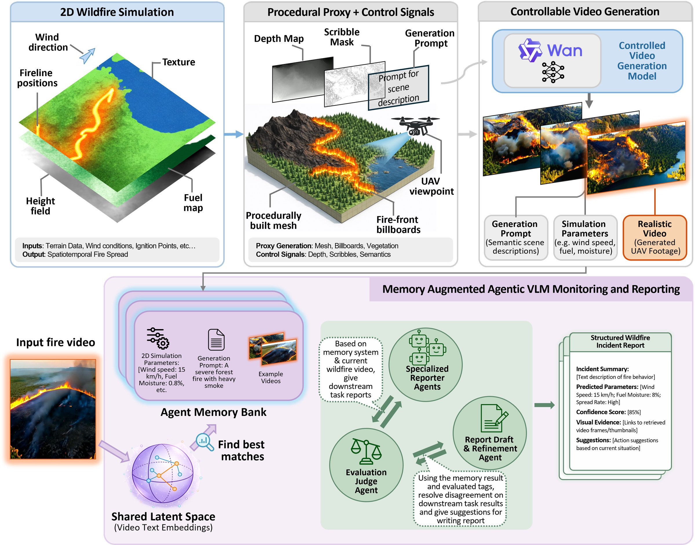
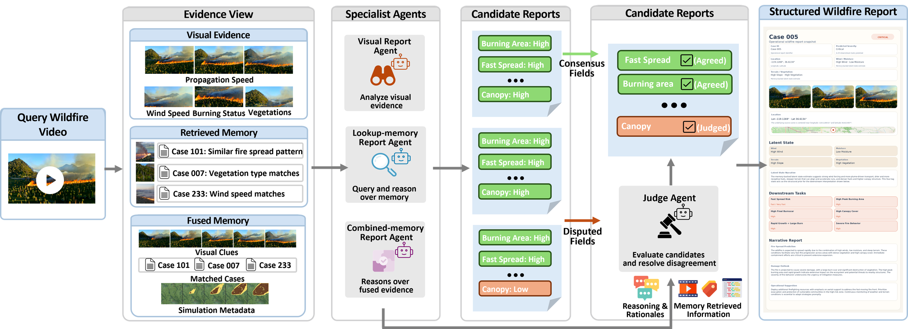
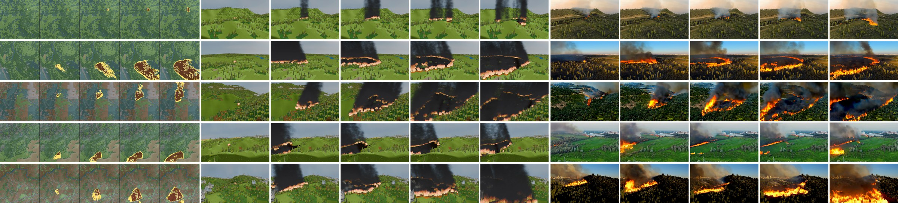
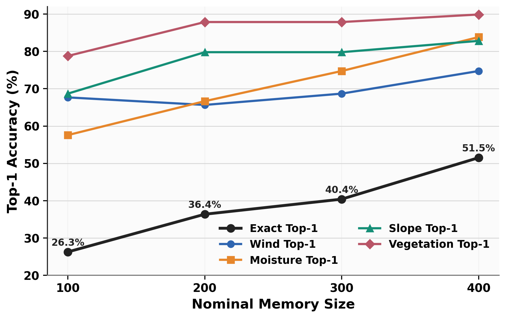
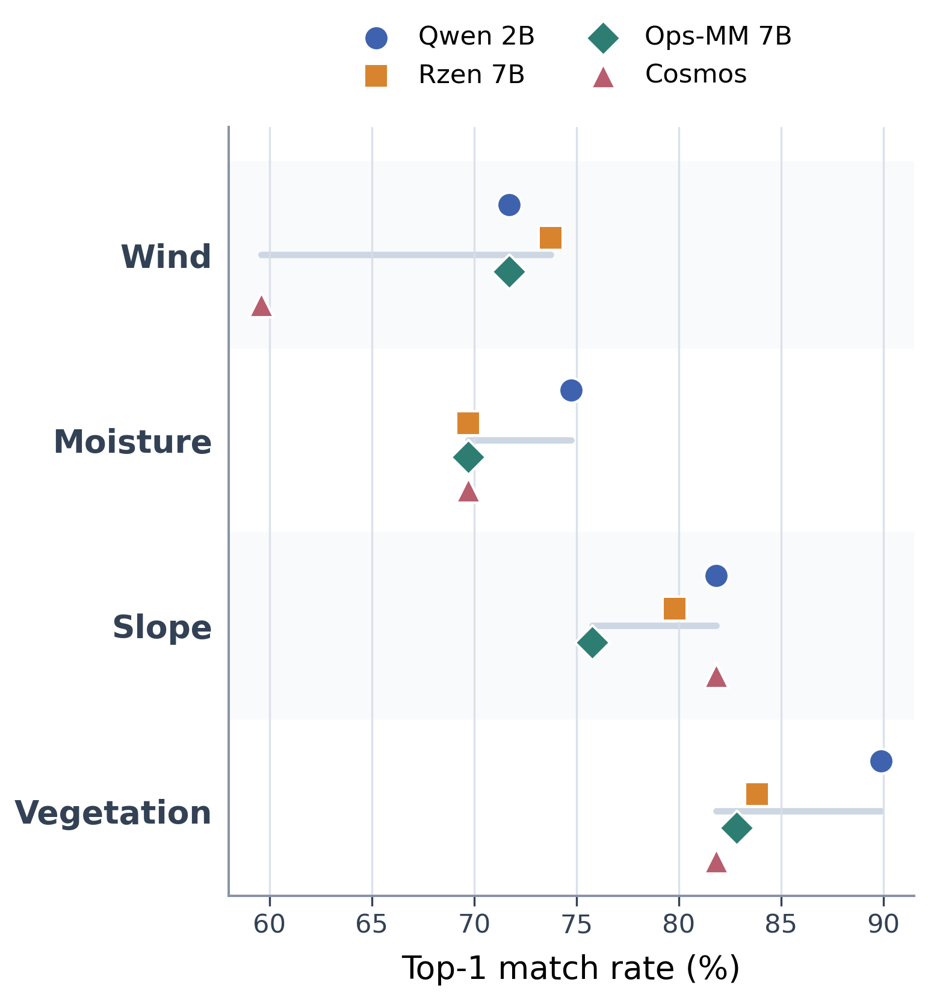
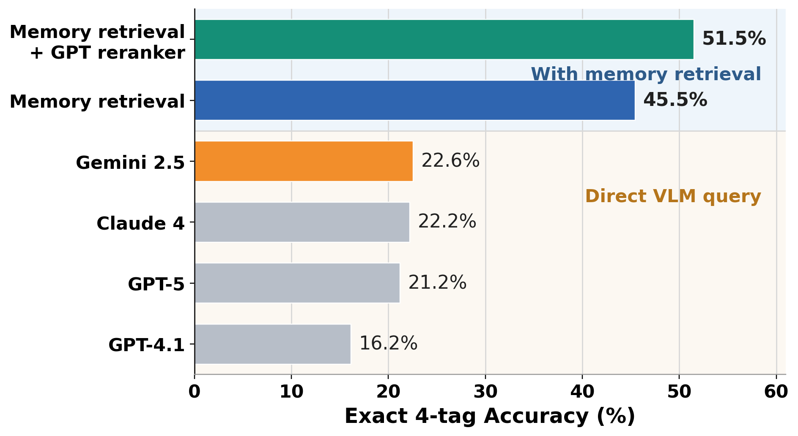
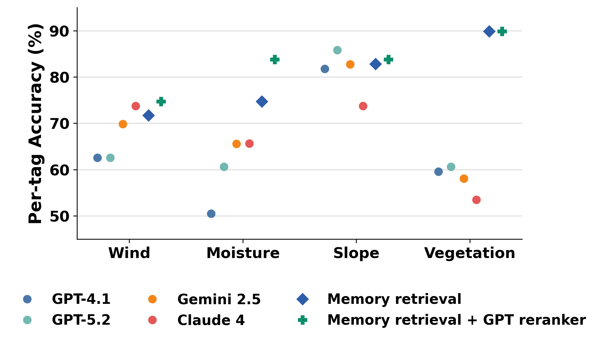
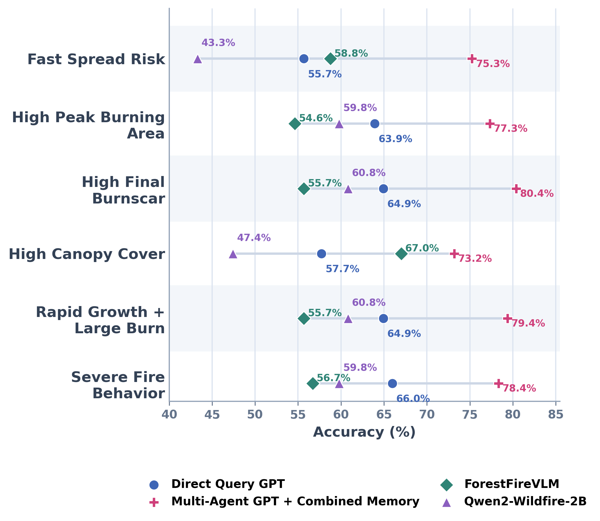

Simulation-Grounded Visual Cases
The generated wildfire clips preserve a link to simulator attributes while presenting realistic video evidence to the VLM agents.
A simulation-grounded video memory system for estimating wildfire status, predicting downstream fire behavior, and producing operational per-case reports.

Effective wildfire monitoring requires relating visual evidence to physical fire dynamics, yet real videos with synchronized physical annotations are scarce and high-fidelity 3D simulation is costly. We present a simulation-grounded vision-language model (VLM) framework that automatically converts 2D wildfire simulations into labeled video episodes. A fixed Blender mapping produces low-detail 3D proxies aligned with simulator terrain, fuel layout, fire activity, and wind cues; controllable video generation supplies richer appearance. The proxies are intermediate representations rather than finely rendered final scenes.
Generated videos and simulator labels form reusable multimodal memory for a training-free multi-agent VLM system that retrieves reference episodes, reconciles visual and memory-based predictions, and produces structured wildfire reports. On held-out generated episodes, video memory achieves 51.5% exact four-tag accuracy, compared with 22.6% for direct VLM querying and 16–17% for text-only memory; the complete system achieves 77.3% accuracy on six simulator-derived report fields. Component ablations, cross-generator tests, and three real-UAV evaluations assess retrieval, reporting, generator changes, and observable monitoring tasks. The framework connects automatic simulation-to-proxy conversion with memory-based VLM reasoning under scarce real-world physical annotations.
The framework keeps the simulator, generated video, memory retrieval, and report writer in one traceable loop: physics creates labeled episodes, video generation makes them readable to VLMs, and memory retrieval gives the agents concrete prior cases.
SimFire produces labeled wildfire trajectories with wind, moisture, slope, vegetation, and downstream fire-behavior targets.
Procedural proxy rendering converts simulator states into video controls, then the video model synthesizes UAV-style observations.
Video and text embeddings retrieve similar episodes, and candidate reranking selects the most useful memory evidence.
Visual, lookup-memory, combined-memory, and judge agents infer state tags, downstream risk labels, and a final readable report.


The generated wildfire clips preserve a link to simulator attributes while presenting realistic video evidence to the VLM agents.
The ablations separate the value of multimodal memory, agent composition, reranking, and memory-bank size.
| Method | Downstream Task Accuracy |
|---|---|
| No Judge Agent (Majority Vote) | 72.6% |
| No Lookup Memory Agent | 74.3% |
| No Combined Memory Agent | 74.1% |
| No Direct Visual Agent | 73.6% |
| Only Direct Visual Agent | 66.8% |
| Only Combined Memory Agent | 72.2% |
| Only Lookup Memory Agent | 67.8% |
| Full System | 77.3% |
| Oracle Upper Bound | 82.3% |
| Method | 4-Tags | Wind | Moist. | Slope | Veg. |
|---|---|---|---|---|---|
| Described-query prompt memory | 16.2% | 62.6% | 51.5% | 65.7% | 68.7% |
| Direct-query prompt memory | 17.2% | 68.7% | 60.6% | 66.7% | 62.6% |
| Full Memory | 51.5% | 74.7% | 83.8% | 82.8% | 89.9% |

Expanding memory from 100 to 400 episodes improves exact and per-tag retrieval accuracy.

Qwen3-VL embedding is selected for the final memory system after comparing candidate multimodal embedders.
| Criterion | Gemini 2.5 | Claude 4 | GPT-5 | GPT-4.1 | Memory w/o Rerank | Memory w/ GPT-5 Rerank |
|---|---|---|---|---|---|---|
| All Tags | 22.6% | 22.2% | 21.2% | 16.2% | 45.5% | 51.5% |
| Three Tags | 56.6% | 63.4% | 63.6% | 49.5% | 78.8% | 82.8% |
| Two Tags | 90.9% | 91.4% | 90.9% | 85.9% | 94.9% | 99.0% |

Memory retrieval with reranking substantially improves full-state recovery over direct VLM querying.

The retrieval pipeline improves most state dimensions, especially moisture, slope, and vegetation.
| Task | Direct Query GPT | Multi-Agent + Combined Memory | ForestFireVLM | Qwen2-Wildfire-2B |
|---|---|---|---|---|
| Fast Spread Risk | 55.7% | 75.3% | 58.8% | 43.3% |
| High Peak Burning Area | 63.9% | 77.3% | 54.6% | 59.8% |
| High Final Burnscar | 64.9% | 80.4% | 55.7% | 60.8% |
| High Canopy Cover | 57.7% | 73.2% | 67.0% | 47.4% |
| Rapid Growth + Large Burn | 64.9% | 79.4% | 55.7% | 60.8% |
| Severe Fire Behavior | 66.0% | 78.4% | 56.7% | 59.8% |

The combined memory-assisted multi-agent system achieves the strongest accuracy across all six downstream wildfire behavior tasks.
Playback is synchronized across all three videos. Videos are compressed for the web.
@misc{chen2026wildfire,
title = {A Simulation-Grounded Agentic VLM Framework for Wildfire Monitoring and Reporting},
author = {Chen, Duowen and Sun, Yuchen and Li, Zhiqi and Liao, Yuxuan and Wang, Sinan and van Bloemen Waanders, Bart and Zhu, Bo},
year = {2026},
eprint = {2610.02451},
archivePrefix = {arXiv}
}